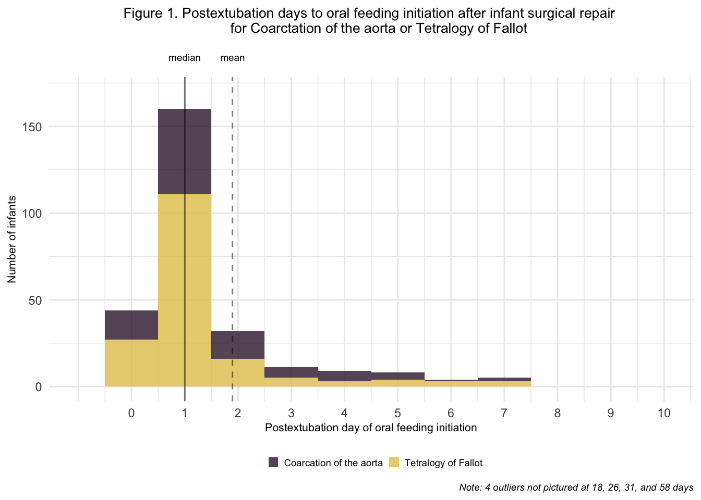

Our first research question was concerned with the time to initiation of oral feeding for infants undergoing cardiac surgery for Tetralogy of Fallot or coarctation of the aorta in the Pediatric Heart Network data set (n = 322).
We began by exploring the average time, in hours, until oral feeding was initiated in the ICU post-extubation.

As visualized in the Figure 1, the median time to oral feeding initiation after extubation was:
Mean (SD): 1.9 (4.44) days
Median: 1 day
Range: 0 - 58 days
Most infants began feeding orally between the day of extubation and two days post-extubation. This trend held for both diagnoses. There were four outliers with very long times to feeding initiation (18, 26, 31, and 58 days). Two of these infants underwent surgery for Tetralogy of Fallot, and two for coarctation of the aorta.
Next, we visually examined patterns in the time of day at which oral feeding was initiated.
As visualized in Figure 2, the most common time of day at which oral feeding was initiated was 10:00 am (n = 21 infants). Evening hours were also common, with 17 infants started on oral feeding at both 8:00 pm and 9:00 pm. A third peak in frequency can be seen between midnight and 2:00 am.
Dotted lines demonstrate the most common times for shift change (7 am and 7 pm). A clear increase in oral feeding initiation can be seen after these times, suggesting that the decision to begin oral feeding may be driven by the hospital schedule rather than by infant cues/clinical readiness. A third common time for shift change is 11:00 pm, which may explain the increase in feeding initiation around midnight.